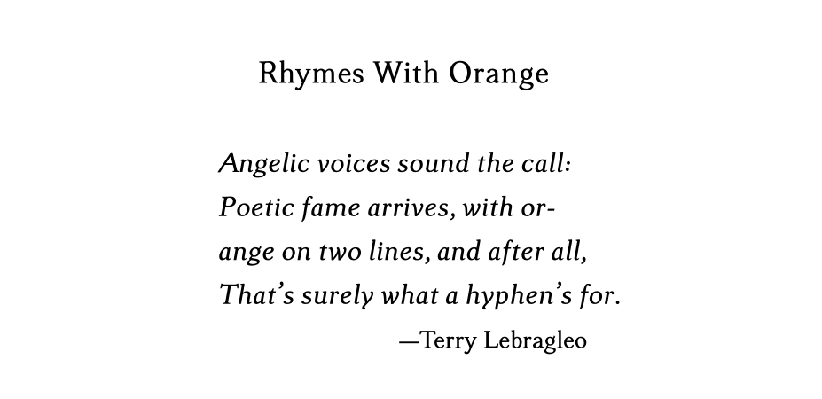

Novelette Documentation
 Home Tutorial Document Body Components
Home Tutorial Document Body Components
 Index
Index
Block Environment
Overview
The block environment may be used for block quotes, epigraphs, poetry (verse), and similar purposes. Althought standard LaTeX has these capabilities, only Novelette's own block environment may be used; the LaTeX standards will fail.
Block Environment
The block environment does many things. Use it for block quotes, epigraphs, poetry
(verse), and other places where a block of text needs special treatment. For centered text,
put it in a block, because Novelette disables the center environment
and \centering command.
\begin{block}[option]
content
\end{block}
You may not use block inside other styling commands. The parent element of block must be the component environment, before or after
\maintext.You may not use block in a legal component, or in footnotes.
You may not nest one block within another. If you need that effect, end one block before beginning a new block.
Use the [option] to change the block side offsets (relative to margin),
the alignment of text within the block, and whether the text size is normal or small.
Format: [L/R,align=A,size=S,font=F]
Alternative: L and R are both numbers (prefer integers).
When L and R are both numbers, they set the left and right block offsets relative to margins, as multiples of normal paragraph indent.
Example:
2/1offsets the left side of the block at twice the normal paragraph indent; the right side at one indent.Limits: 0<=L<=8, 0<=R<=8.
Default is
2/0.
Alternative:
k/kThis requires prior
\key{text}setting.The width of the formatted key text is measured. The difference between full linewidth and key width is split as left/right block offsets.
This is most useful for an epigraph, particularly when the key is the same as the first line of block text.
Alternative:
k/RorL/k, where L and R are numbers.This requires prior
\key{text}setting.The width of the formatted key text is measured. The difference between full linewidth and key width is halved, and applied only to one of left or right block offset. The opposite offset is determined by the number of paragraph indents.
Using
k/0is most useful for a poem (verse), when the key is the same as an average line of the poem. Best with[align=left].
Asets how text is justified within the block. Choices: left right center justify. Default justify.If A is justify (default), then hyphenation and paragraph indent are applied as usual. For any other choice, hyphenation is disabled within the block, and there is no paragraph indent.
Schoices are normal, small. Default normal.Only display zones allow small. If small, font size and baselineskip are reduced to the size of footnotes.
Fis either normal or italic. Default normal.[font=italic]prints all content in Italics.For only a few words in Italics, use
\textit{text}as usual. It cannot cross paragraphs.Unlike the
\styleNcommands, you cannot choose a font other than the main font.
Key Text
The \key{text} command must be set prior to any block that
uses [k/k] or [k/R] or [L/k] option.
The block does not need to follow immediately, because the key remains in effect
(whether or not it is used) until changed by another \key.
If the text will be used in a block with
[font=italic], then you do not need to set Italics in the key. It is automatic.You cannot set
\keywithin a within a block. It must be set before the block begins.When it is needed by a subsequent block, the width of text is measured. It may be normal size or small, normal text or Italics, depending on the block option.
Only the width is used for calculations. The text is not printed. It may or may not appear in any block.
The width may not exceed the textblock width. It may not wrap.
The measurement is made without paragraph indent. If you need it measured with indent, write
\key{\indent text}.
Attribution
If you need a short attribution at the bottom of a block, you may write this within the block, after ending its last paragraph:
\attrib{text of attribution}
The attribution must be a single line, no wider than the block width. If it is too wide, then manually break it into several
\attrib.The text will be right-justified, and preceded by an em dash.
Whether or not the block uses
[font=italic], the attribution is not in Italics, unless you use\textitfor all or some of it.If the block uses
[size=small]then the attribution will also be small.
Prose Epigraphs
An Epigraph is a brief, real or imaginary quotation. It may be used in frontmatter, to set the tone of the book. It may be used in display zones, to set the tone of particular chapters.
This section describes the prose epigraph, which is one or more paragraphs of text. For a poetic epigraph, with lines of varied lengths, see the next section.
A good epigraph is an excelllent transition from frontmatter to mainmatter.
Unless you are certain that quoted material is in the public domain, do not use material from someone else. A better tactic is to create your own epigraph, related to something in the story.
Write the epigraph in a block environment.
If the epigraph stands alone, use equal block side offsets, with justified alignment.
If the epigraph is at the beginning of a chapter, between the chapter title and its main text, then there are two possibilities: You may use equal block offsets, with justified alignment. Or, use block option
[0/N,align=right]where N is usually 0. In either case,[size=small]is useful.All paragraphs will be indented, unless you begin them with
\noindent.For attribution, add one or more lines beginning with
\hfill. That will push the line to the right side of the block.To vertically center the block (when alone on its page), use
\vfillabove and below the block.To move it slightly higher than vertical center, use one or more
\blanklineaftr the block.
Example Prose Epigraph: The book is a brutal crime novel, set in 1930s Chicago. This is an imaginary quotation from an imaginary newspaper article. When prospective readers see this, they know what to expect in the story:
\begin{component}
\vfill
\begin{block}[4/4]
\indent Even in a city that has seen the darkest side of humanity, recent events drag us to
a new level of revulsion. Frightened citizens avoid the main thoroghfares in daylight,
even as they avoid dark alleys at night. State and local authorities have no strategy
for dealing with the situation. If federal force must be used, it will be.\par
\attrib{\textit{Chicago Klaxon,} May 24, 1933.}
\end{block}
\blankline\blankline\vfill
\end{component}
Result:
Poetry (Verse)
Use the block environment for poetry. Manually break lines using \\
or \par where needed. Details of block options are described earier on this page.
If you need a specific left offset for the block, use block option
[L/0,align=left].If there is an average-length line, try this: Use
\keywith that line text, and set the block option to[k/0,align=left].For a different effect, sometimes used for a chapter epigraph: You may push the lines to the right, using block option
[0/R,align=right].
Example Poem:
\begin{component}
\key{ange on two lines, and after all,}
\style4{Rhymes With Orange}
\blankline
\begin{block}[k/0,font=italic]
Angelic voices sound the call:\\
Poetic fame arrives, with or-\\
ange on two lines, and after all,\\
That's surely what a hyphen's for.\par
\attrib{Terry Lebragleo}
\end{block}
\end{component}
Result:

 TOP
TOP